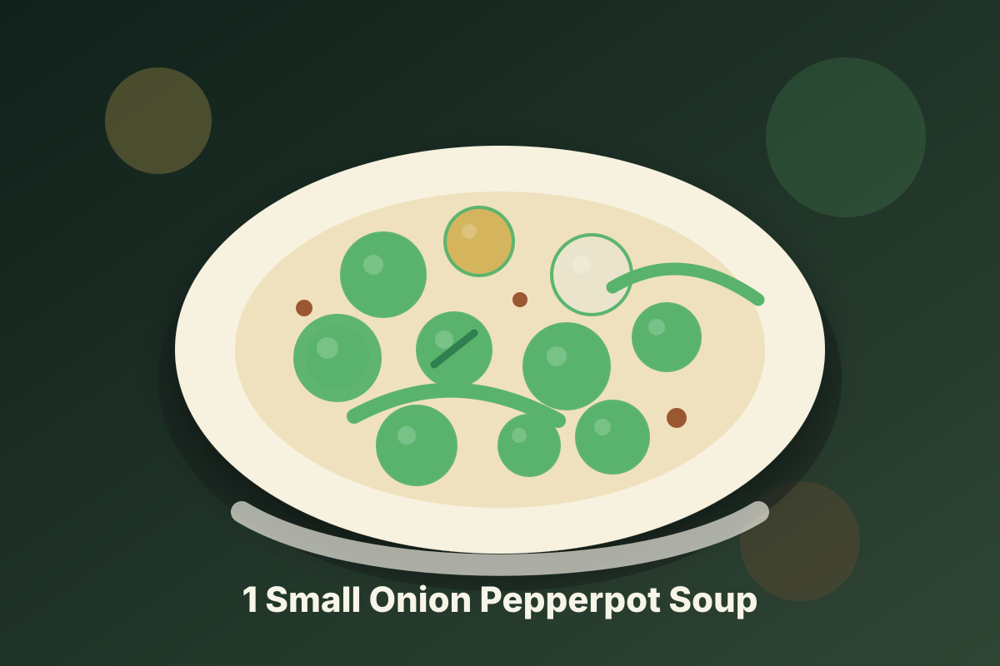

Jamaican · Vegan
1 Small Onion Pepperpot Soup
A vegan pepperpot soup built around 1 small onion with appliance-friendly steps and Jamaican-inspired island seasoning.

Ingredients
- 1 tablespoon coconut oil or vegetable broth
- 1 small onion, diced
- 2 cloves garlic, minced
- 2 scallions, sliced
- 1 teaspoon fresh thyme
- 1/2 teaspoon ground allspice
- 1/2 teaspoon sea salt, divided
- 1 teaspoon low-sodium tamari or soy sauce, optional
- 1 tablespoon lime juice
- 1 cup light coconut milk
- 1 small onion
- 1 cup diced
- 2 cloves garlic
- 1 cup minced
- 2 scallions
- 1 cup sliced
- 1/2 teaspoon sea salt
- 1 cup divided
- 1 teaspoon low-sodium tamari or soy sauce
- 1 cup optional
- 1 cup vegetable soup powder from Wincos bulk section
- 2 cups diced potatoes
- 2 cups cauliflower florets
- 1 cup diced carrots
Instructions
- Select Saute on High and cook the onion, garlic, scallions, thyme, and allspice in the oil for 5 minutes.
- Add the main ingredients, coconut milk, tamari, and 1/2 cup water. Scrape the inner pot clean, then seal the lid.
- Pressure Cook on High for 5 minutes, then allow a 5-minute natural release before venting the remaining pressure.
- Select Saute on Low for 3 to 5 minutes if the sauce needs thickening, then finish with lime juice and fresh herbs.
Appliance Settings
| Appliance | Mode | Setting | Time | Notes |
|---|---|---|---|---|
| Instant Pot Pro Max WiFi | Saute | Level: High | 5 min | Bloom aromatics before liquid is added. |
| Instant Pot Pro Max WiFi | Pressure Cook | Pressure: High | 5 min | Allow a 5-minute natural release before venting. |